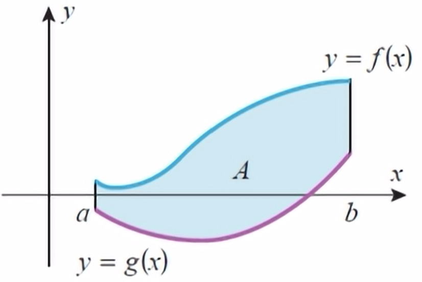
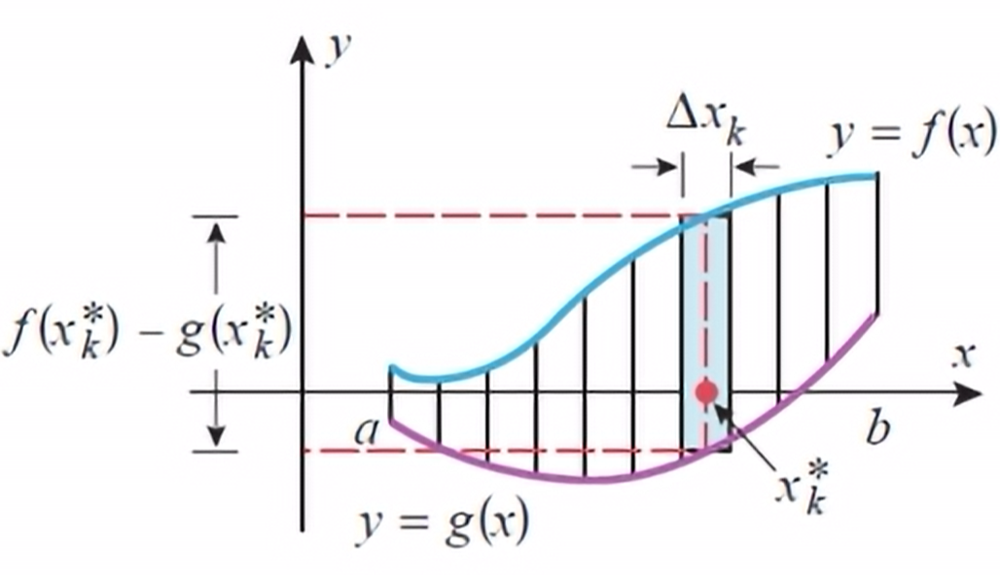

Until now, we've looked at the area between the x-axis and the curve. Now, we will find the area between two or more curves.
Recall that if \(f\) is continuous and nonnegative on \([a,b]\), then the definite integral for the area \(A\) under \(y=f(x)\) over the interval \([a,b]\) is obtained by four steps:
But how do you find the area between two curves?
Recall the concept of net signed area. By splitting the area between the curve into subintervals of width \(\Delta x_k\) and height \(x_k^*\).
So the area of a subinterval will be: $$f(x_k^*)-g(x_k^*)\Delta x_k$$
Then, we can add the area of the subintervals: $$\sum_{k=1}^nf(x_k^*)-g(x_k^*)\Delta x$$
And to find an exact number: $$\lim_{n\to\infty}\sum_{k=1}^nf(x_k^*)-g(x_k^*)\Delta x$$
Now, we can simplify this Riemann sum using integrals: $$\int_a^bf(x)-g(x)dx$$
If \(f\) and \(g\) are continuous functions on the interval \([a,b]\), and if \(f(x)\geq g(x)\) for all \(x\) in \([a,b]\), then the area of the region bounded above by \(y=f(x)\), below by \(y=g(x)\), on the left by the line \(x=a\), and on the right by the line \(x=b\) is $$A=\int_a^b[f(x)-g(x)]dx$$
Steps:
If you are not explicitly given the limits of integration in the problem, you must find the limits algebraically! This is typically the intersection of the curves.
Sometimes it will be much easier to find the area of a region by integrating with respect to \(y\) rather than \(x\). It is possible that vertical subsections (integrating with respect to \(x\)) involves two integral expressions, but horizontal subsections (integrating with respect to \(y\)) only requires one.
If \(w\) and \(v\) are continuous functions, and if \(w(y)\geq v(y)\) for all \(y\) in \([c,d]\), then the area of the region bounded on the left by \(x=v(y)\), on the right by \(x=w(y)\), below by \(y=c\), and above by \(y=d\) is $$A=\int_c^d[w(y)-v(y)]dy$$